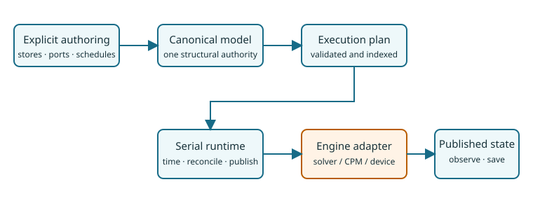

ProcessBigraphs.jl
Compose mechanisms. Keep authority explicit.
ProcessBigraphs.jl is a domain-neutral, multirate orchestration runtime for scientific models. It gives stores, ports, schedules, reconciliation, observation, and replay one inspectable meaning while leaving heavy numerical work with solver and engine adapters.
Build your first composite · Understand the guarantees · Read the API by task

Support level — qualified unpublished internal beta. This manual documents the admitted ProcessBigraphs 0.6.0 boundary on this repository branch. It is not a registry release or a complete implementation of every Process-Bigraph 2.0 concept.
Choose a route
Compose a model
Start with the mental model, then build a multirate composite. Every connection and schedule stays visible.
Integrate an engine
Learn the adapter boundary and implement the public extension protocol.
Reproduce a run
Follow RNG, observation, checkpoints, and replay, then audit the source-bounded scientific case studies.
What the package owns
ProcessBigraphs owns logical time, scheduling, typed projections, effect reconciliation, atomic publication, structural transaction boundaries, semantic RNG addressing, observation, and logical checkpoint/replay. An adapter owns numerical kernels, solver state, buffers, devices, and the method used to produce a candidate.
That split is a correctness boundary: a completed engine operation is not visible state until ProcessBigraphs validates and publishes its candidate.
A complete authoring shape
model = compose(:CoupledExperiment; scale=TimeScale(1)) do system
signal = store!(
system, :signal,
LeafSchema(Float64; default=0.0, update_law=:add),
)
pulse = mount!(system, :pulse, MyPulse(0.25))
connect!(system, pulse.signal, signal)
schedule!(system, pulse, Every(Duration(1, TimeScale(1))))
observable!(system, :signal, signal)
end
report = validate(model)
plan = compile(model)
problem = SimulationProblem(model; seed=42)There is no name-matching autowire step. Mounting does not connect, schedule, or expose a component.
Scientific boundary
The Wortel and Merks pages are qualified source-bounded case studies. They show reduced deterministic teaching profiles and explicit nonclaims. A successful bounded run does not reproduce a paper figure, estimate an ensemble, validate physical time, or imply author endorsement.
Reproduce this site
julia --project=lib/ProcessBigraphs/docs -e 'using Pkg; Pkg.instantiate()'
julia --project=lib/ProcessBigraphs/docs lib/ProcessBigraphs/docs/make.jlThe build is strict: doctests execute, cross-reference warnings fail, and the curated navigation contains exactly the registered 35 pages.